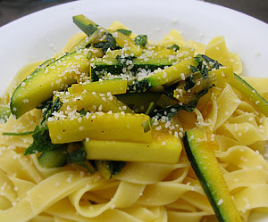

Bandnudeln mit Safran/Zucchini-Sauce
4,5 von 6200 g zucchini in feine steifen schneiden. eine zwiebel in olivenöl andünsten. ein briefchen safran in 2 el wasser auflösen und beigeben. petersilie, basilikum, zucchini sowie 1/8 l fleischbrühe dazugeben. sanft köcheln lassen, mit salz und pfeffer abschmecken. mit den al dente gekochten fettuccine vermischen.
